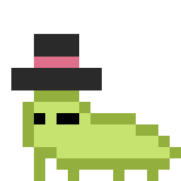
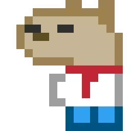

Hello everyone!
I recently participated in the Game Maker’s Toolkit Game Jam 2021 and I thought I would write a dev-log to reflect on my experience. This is the first game jam I’ve ever done and I have a lot of thoughts. Also, this is the first dev-log I’ve written that’s not about Project Phases, but don’t worry, Phases is developing smoothly and may be getting a dev-log of it’s own relatively soon.
For those who don’t know, a game jam is where developers are challenged to make a game within some certain restrictions, generally a short period of time and a theme. Sometimes they are competitive, sometimes they are just to see what cool stuff people make. The GMTK Game Jam in particular is a 48-hour jam that is overall just about the cool stuff people make.
For this dev-log, I’m going to go through each day of the jam and go over what happened during the development of our game, what mistakes I made, what I could have done differently and more! I have also made a video of me going through the finished game which I will link at the end of this dev-log, so be sure to check that out as well. Here we go.
Pre-Jam Planning
The idea to do the jam came from a friend of mine, Alex. He’s one of my artist friends who is helping out with Project Phases. He wanted to partake in a game jam for the experience of making a game from scratch, so we decided to look around for a jam on itch.io. We decided on the GMTK jam for 2 reasons. First, it is a massive jam, the biggest on itch I believe, so even if our game turned out horribly, it would most likely just get drowned out by all of the submissions. On the flipside, due to the size, we could get some good feedback assuming people actually play our game. Second, it was relatively short, only being one weekend. Some jams can go on for weeks which wouldn’t work for either of our busy schedules. The GMTK Jam also has a winner that’s decided by Mark from Game Maker’s Toolkit himself, but we weren’t aiming for that. All we wanted to do was submit something, a game you could play from beginning to end. That was our goal.
The plan was I would do the majority of the programming, while Alex would do the majority of the art since those suit our talents best. So with a date, time and plan at hand, we were ready to roll. All we had to do was wait for the day to come.
Day 1
The jam started on June 11th when the theme was revealed. The theme was “Joined Together”. They encourage people to interpret the theme however they like. You can interpret it metaphorically, literally etc. About half of the first day was spent brainstorming ideas. We went through many concepts such as being joined to an enemy or joining yourself to objects to float upwards or get pulled downwards. The main issue was many of the concepts we came up with were very surface level ideas. For example, an idea that came up was joining together music into chords to do different things. That was great, but how would it play, what would the objective be, what would be the point in joining notes, why would you ever not join notes. These are all questions that could be answered given enough time, which is something we have little of so we just moved on.
The idea we finally decided on had to do with joining together key bindings to objects. What if you connect button inputs to different objects to solve puzzles. For example, let’s say you’re in a room where there is a door blocking your way out. The door can be opened by standing on a button, but the button happens to be on the other side of a wall that you can’t get to. However, also on that side of the wall was some sort of object that could access the button. Our idea was that you would be able to give it your ability to move to that object, then you could move the object to open the door to let you through.
It seems pretty basic, but here is where the idea gets very interesting. Once you assign an input to something else, you can’t get it back until that object is destroyed in some way. So, in this scenario, once you give the object your ability to move, you can’t move to leave the room. The solution is to destroy the object in some way to get the input back.
That’s the basic concept we came up with, it definitely makes more sense in practice. You can check out the video at the end of this dev-log to see me play the demo if you want to get a better idea on how it works (after you finish reading this of course).
Once we got the idea (about 6 hours into the jam), we started work. I started programming the basic mechanics of the game while Alex designed some puzzles. After many hours (around 11pm), I had a functional prototype and we had a good batch of puzzles written down. I have to hand it to Alex, he did a great job with the level design. He designed the levels almost like a Zelda dungeon, which is a unique way of looking at it. His designs involved moving characters to press button/levers and lighting torches with fire. On my end, the prototype included the basic movement, collision and the main ability to give your inputs to various objects.
Around this time, we started brainstorming some more ideas. Before the jam began, I told myself we had to limit all of our ideas to a small scope. We only had 48 hours, we weren’t going to make a masterpiece or anything. However, we definitely went overboard with ideas during those first few hours of development. We spent (in hindsight, more like wasted) a lot of time thinking of ideas that were outside of the scope of the jam. I guess we were just excited.
All that being said, it was a good way to end Day 1. We had a solid prototype and about half of the levels designed. We both called it a night and went to bed for the next morning of the jam.
Day 2
I got up early on the second day and started work. That morning, my main goal was to get the prototype to a point where we could start putting the levels into the game. I added things like a display manager, basic saving, polished up the few systems that we had, and added the fire system to use in a later puzzle. By around 11:00am, I started building the first few levels. This is where I decided the game size. I’ve been basing a lot of the game on my experience working on Project Phases. The game resolution of Project Phases is 640x360, and I made it the same for this since that was what I was used to. Be sure to remember this for later, since it will come back up.
Sadly, life got in the way and Alex was unable to work on the game until much later, so I was on my own for a large chunk of the day. After a brief lunch, I continued with laying out and testing level 1, which is about the first ten rooms in the game. This took much longer than I expected. I kept finding small bugs that would break the game. By far the worst one was one involving the warp between rooms. After I had created the 7th room, I went to test it from the beginning. However, when I entered the 7th room, the game just froze. I thought that maybe I had accidentally put something within that room that broke the game, but even when entering an empty room the game still froze. After much trial and error I started randomly getting “Out of Memory” errors, indicating a memory leak. This was really bizarre, since up to this point in development, I hadn’t really done anything that would constitute a memory leak such as using data structures. After about 2 hours, I finally figured it out.
Whenever you leave a room to continue to the next one, what is actually happening is you are colliding with a warp object which starts the transition, switches the room and sets you at the correct position in that room. There is a warp for every entrance and exit in a room that I set manually. In order for these warps to work, they have to be set as persistent objects which means they will stay loaded even when the room is changed. However, I still needed them to be destroyed after the room transition had completed, so I put some code to make sure they were discarded. However, my code was flawed and all of the warps that took you to the previous room were not being destroyed properly, leaving active warps scattered all around the edges. I didn’t notice it for the first 6 rooms since those rooms all have different locations for the entrances and exits. But conveniently, the warp in between the 6th and 7th room and the warp between the 4th and 5th room were at the exact same location. So, when you tried to leave the 6th room to go to the 7th, you were actually colliding with two separate warp objects which tried to take the player to 2 places at once which caused the game to freeze. It was a simple fix once I figured it out, but wow did that take up a lot of valuable time.
This was not the only room related bug I had, I also had a lot of trouble with doors closing themselves when you switched rooms leaving you stuck, inputs not getting reset between rooms and more. I would say in total, I lost about 4-5 hours of just room related bugs, not great.
Setbacks aside, I finished implementing the first level around 8:00pm. At this time, Alex had returned and had been working on the tilesets and sprites for a couple of hours and had just about finished them. He had never drawn a tileset before but he did a pretty good job and it served us well for what we needed. Now that the assets were drawn, it was Alex’s job to put them into the game since I was busy starting work on both designing and implementing level 2. However two issues arose. One, Alex didn’t know how to use GameMaker and two, we were both working on the same project at the same time. The first problem was fixed by a quick five minute tutorial by yours truly on how to use the GameMaker room editor, and the second problem was fixed by the existence of Git.
For those who don’t know, Git is a version control system that allows you to save different states of your project. It’s extremely useful and almost a necessity in my opinion if you are working on any project for an extended period of time. Another benefit of Git is it also allows you to have multiple people work on the same project at once with the use of a remote repository such as GitHub. I’ve used Git for Phases for a few years now, so I was familiar with it but I had never used it to work with other people before. I knew about the possibility of a merge conflict (where two different changes are made to the same line of code and you must choose one or the other) if both of us were working, but I assumed (and briefly tested) that if we strictly worked on different rooms it wouldn’t be an issue.
So, after Git had been set up, I started work on level 2 while Alex placed tiles for the previous rooms. Remember earlier when I said I made the game size 640x360? This is where that decision created more work for us. Placing tiles throughout the room took much longer than expected since the rooms were relatively huge. Our tile size was 16x16, leaving a large area to fill in. I foresaw this problem earlier so I made the effective size of the level smaller by adding a border around it where the input keys are stored. While this helped, the better solution would have just been to make the whole room a smaller size that would still scale properly to 1080p screens, 480x270 comes to mind. The reason I didn’t do this was because I needed to make sure we had enough space to fit all the puzzles on one screen. Since the ability to drag inputs to objects was essential, the ability to see everything at once is extremely useful. If the rooms were too small, some puzzles may not be able to fit depending on their complexity. It also saves some time by allowing me to get away without making a camera, which could have gotten complicated if you were moving various objects all over a room. However, in the end, none of the levels we made even got close to filling the whole room, so we could have gotten away with a smaller size no problem.
While Alex was placing down those tiles, I was working on the final elements needed such as the arrow dispensers, arrows and enemies. All of these things were relatively straightforward, but still took a bit of time before they were working properly. It was around 11:00pm at this time, and we didn’t really have any idea at what point we would stop. We had about another 6 rooms partially/fully designed and even had the idea for a boss battle, but as the night grew darker, so did our ambitions. After I put in 5 more rooms (one of which was almost a complete duplicate of another and one was just an empty room with 3 enemies), I decided we would finish those rooms and call it a night. Alex agreed and we worked towards our new goal.
Around this time, Alex finished tiling the first level which meant he was ready to push his changes to GitHub for me to then download. But of course, when I went to pull his changes, we had a merge conflict. Oh boy, what fun! Let me tell you, the last thing I wanted to do was deal with my first ever merge conflict at midnight when we still had plenty of work with limited time and stamina. So, I didn’t deal with the merge conflict, instead I uploaded all of the room files from Alex’s computer into a google drive, downloaded, and imported them. GameMaker wasn’t a huge fan of this, but after some messing around I got it all working and I could move on. Sidenote, I still don’t know what exactly caused the merge conflict to begin with. The room it referenced as the source of the conflict was a room I didn’t even mess with. I never got a chance to check to see what exactly changed but I would bet it was very little.
After that, Alex was assigned to make a title and credits screen before he could call it a night, while I continued finishing up the last few levels. He had done a great job with the assets and even though he started much later, in the end his delay didn’t really affect much besides the bit of time we lost adding the tiles to the rooms after the fact and the merge conflict because of it. At this point, I had everything I needed to finish the game, I just needed the energy to get through it, which I was quickly running out of.
After a couple more hours, around 2:00am, we decided our game was in a finished state. I had done very little playtesting of the entire thing, so I didn’t really know if it even worked. Luckily, we playtested it and were able to complete it from start to the beginning without crashing! However, there were definitely problems (and big ones) that needed fixing, but my brain was fried and we were both extremely tired so we called it a night. I knew my time to work on the game would be very limited the next day, about 2-3 hours, but I made a quick list of things that needed to get done in the morning and went to bed.
Day 3
Day 3 started late, I got to work at around 10:00am. Submissions closed at 2:00pm, but I had prior plans and only really had 1-2 hours max to work. I went down my list of problems to fix, and got everything working relatively quickly. It only took around 30 minutes to check everything off my list. This left me with a little over an hour to add whatever last minute things I wanted before I needed to submit (which takes time in itself). I had 2 options, I could either fix some more bugs and polish or add another room or two. I knew for a fact that the game still had some game breaking bugs that I wanted to fix, but just didn’t know if I had the time too. So, I decided to add some more content. I went through our level designs we didn’t put in and picked 2 fairly simple rooms to add at the end and quickly added them. I’m very happy that I added these rooms because they make the game feel at least slightly more complete, even if it left the game in an not entirely polished state.
After those rooms were added, I was really pushing my time so I had to quickly throw together the itch.io page and finally, around 11:30pm, I submitted Bindin’.
The rest of that day, I just chilled out and took it easy. I was super tired and really wanted to relax, so I did. After doing some other things I checked back on the submissions, played and rated some other people’s submissions. It was really cool seeing everyone else’s ideas and execution. I also saw that many of the really cool looking games had teams of four, five, six or more people working on them which is not only impressive in itself, but made me feel a bit better about our two man team and how we stacked up. While I think comparing your project to others could be harmful to your mentality, it can also be beneficial if you are able to understand why their game may be better than yours and what you can do better.
After a while, I started getting comments on Bindin’, most of which were all along the lines of “This is a neat concept, but the game crashed at x point”. I’m really happy that people seemed to like the idea, but not too thrilled that the game was barely functional for most. I started to feel like I should have put a bit more time into playtesting and making sure the game was more robust. I felt embarrassed to just have an apparently broken game be the only thing sitting on my itch.io page, so….
Surprise! Day 4
Yeah, we aren’t done yet. The next day I started work on Bindin’ Version 2. I had 3 main goals: make the game more stable, add some sort of tutorial so you could play it without reading the itch.io description, and add a few more new levels for tutorial purposes and to better use some of the mechanics. I really didn’t want to spend anymore than a day on this, I just want to make Bindin’ slightly more presentable and playable.
I won’t go over everything I did, but I will go over a few. First, I fixed all of the bugs that were mentioned in the itch comments. I also actually used the assets Alex made properly. He animated many things like the robots and spikes that just didn’t get animated in the version I submitted, my bad. I also cleaned up a lot of the older room’s layout and tiles and even redesigned some of them slightly. And of course, I did everything I mentioned before, stability, tutorial and added a few more levels.
Though I am happy with how the original turned out, I am much prouder of the newer version. Even though the newer version isn’t part of the jam anymore since I went overtime, I only spent another 6-8 hours on it so I’m still proud of it in the sense that it was made in under 56 hours. If you go to download the game now, make sure you download Version 2!
Reflection
Overall, I am quite happy with how the game turned out. Of course, I wish I had just a bit more time to polish up the version I submitted, but that defeats the point of the jam. You really learn a lot by forcing yourself to work efficiently to make the best thing you can. You can also have fun experimenting just because you are working on a clean slate. I don’t think this is an issue for many, but I haven’t really worked on many games outside of Phases. Because of this, I haven’t had a chance to use programming skills that I wouldn’t need for Phases, until now. The jam pushed me to not only use what I know to the fullest, but to learn new things that I didn’t need to know before. If you are a programmer, I would highly suggest doing at least one game jam just to see what you can learn. You don’t even need to submit anything, as long as you get the experience.
I would like to do another game jam at some point, though probably not anytime soon. I am almost certain I will make something better next time. The main points of improvement that I would want to see is a clearer plan and vision and more efficient use of time. Ideally, as I become more and more experienced in programming and game development as a whole, both of these things should just come with time. That being said, having a solid, concrete plan would have definitely been more helpful. I haven’t mentioned this yet, but there were many assets that Alex made that just ended up not being used for one reason or another. It’s a real shame, especially since they are really good. Here, I’ll prove it!


Maybe we will be able to reuse these another time, maybe in another jam or even possibly Project Phases?
One thing I am left wondering is whether I would prefer to do a longer jam or not. I think 2 days is about the minimum to get actual results, but 3 or 4 days could be very interesting. The difference between a game made in 2 days versus 3 is massive, just look at version 2 of Bindin’ for proof; that was done in just a few hours. However, a longer period means staying dedicated for a longer period of time, which can just be difficult sometimes to find 3 or 4 consecutive days where you are relatively free.
Another thing I may want to try in the future is being a part of a bigger team. In all my game development efforts, I’ve really worked alone. I’ve had a few friends help with art, and obviously I had Alex here, but other than that I generally work alone. I’m honestly fine with this since I always have that fear of “if I don’t do it, then it won’t be done right”, even though that mentality is generally unwarranted. Even so, my extent of working on a team has always been with artists. I would love to work with another programmer to develop something, or work under the direction of someone else instead of me. They just seem like fun and important experiences I should have if I continue this path down game development.
Wrapping Up
While I tried to be comprehensive in this dev-log, there was a lot I left out. That weekend was filled to the brim with events from E3 to the game jam and lots of other things that just gave us less time to work. Trust me, I’ve left out plenty. So, even though the final product may not be the most impressive thing in the world, given the circumstances, I think we did a great job. Thank you to Game Maker’s Toolkit for making the jam possible and for everyone who played the game.
If you want to download and play Bindin’, you can do so out here. Be sure to download the newer version! Also, here is the video I recorded of me playing through the game if you want to see it in action.
In the end, we submitted something, and that was truly my only goal. Because of that alone, I am happy. This dev-log turned out to be much longer than I anticipated (that always seems to happen), so thank you for making it to the end. Now back to your regularly scheduled Project Phases.